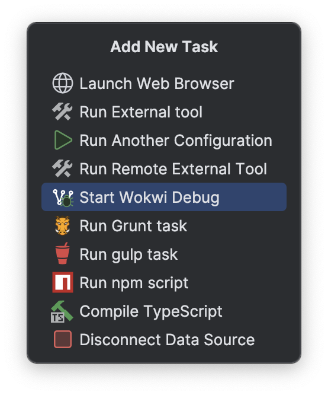
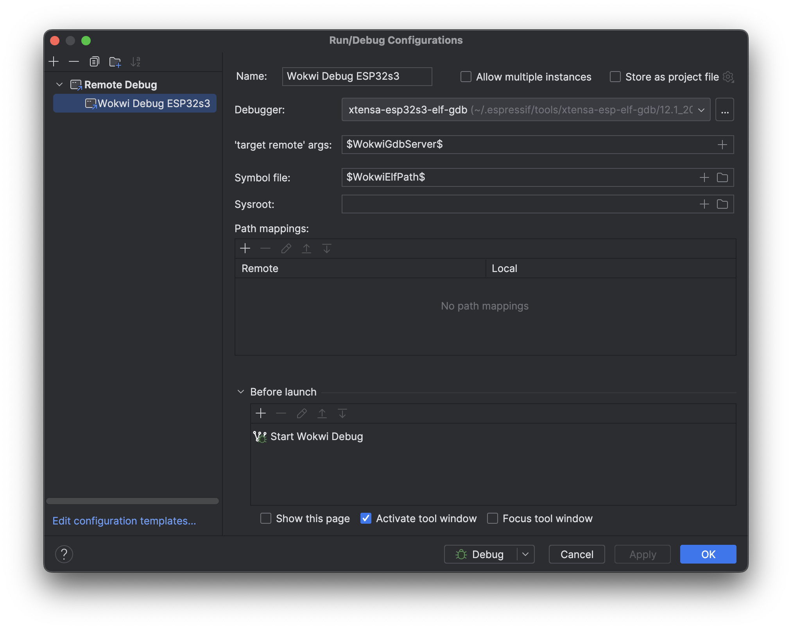

For the Debugger set the GDB executable for your target platform.
E.g. the xtensa-esp32s3-elf-gdb executable is suitable to debug esp32s3 target programs.
For the 'target remote' args enter $WokwiGdbServer$ to the field.
Alternatively click on the ＋ icon and select the WokwiGdbServer macro. This will automatically insert the correct GDB server address, specified in the wokwi.toml.
In the Symbol file field enter $WokwiElfPath$ or select it from the macro list by clicking on the ＋ icon.
This will set the debug symbol file path to the ELF path defined in the wokwi.toml.
Under the Before launch task list, click on the ＋ icon. From the list select the Start Wokwi Debug task.

Click Apply to safe the configuration. When running the configuration, Wokwi is started in debug mode, starts a GDB server and waits for some client to connect. Then the debugging client is started and connects to the GDB server which starts the program execution.

Limitations
Because the Remote Debug configuration is only available in CLion, it is not possible to debug Wokwi simulations in other IDEs such as Intellij or RustRover. However, it is most likely that RustRover will get a similar configuration once it is out of EAP.